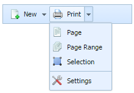

ButtonSelect Control
a button that can list several options:

Adding ButtonSelect
There is a simple method that adds a ButtonSelect to the toolbar - addButtonSelect:
myToolbar.addButtonSelect(id, pos, text, opts, imgEnabled, imgDisabled);
The following parameters should be passed to this method:
- id - (string) id of a select button.
- pos - (number) position of a select button.
- text - (string) text for a select button (null for no text).
- opts - (array) listed options for a select button.
- imgEnabled - (string) image for enabled state (null for no image).
- imgDisabled - (string) image for desabled state (null for no image).
- renderSelect - ("true" or "disabled") if the parameter is set to true, a button 'remembers' the selected item and keeps it selected on the next opening.
Optional, by default is true.
- openAll - (boolean) if the parameter is set to true, you can open the dropdown list by clicking both on the label and arrow of a button.
If the parameter is set to false the dropdown list can be opened just by clicking on the arrow. Optional, by default is true.
- maxOpen - (number) sets the number of items visible at once. The other items can be gotten by scrolling down the dropdown list. Optional.
- mode - (string) set the "select" value to enable the select mode (select-like behaviour)
The opts parameter requires a more detailed description, as the user should specify the following attributes for each listed option:
- id - id of the option;
- type - obj/sep, whether this option is an object or a separator;
- text - label of the option (only for objects);
- img - path to the option image (only for objects).
Several options can be set at once in the opts variable:
var opts = [
['id1', 'obj', 'option1', 'img1'],
['sep01', 'sep', '', ''],
['id2', 'obj', 'option2', 'img2']
...
];
This line of code should be written before we invoke addButtonSelect method.
This code is very useful, as instead of writing all the arrays for the opts parameter in the addButtonSelect method,
we can use the opts variable, declared before.
Related sample: ButtonSelect creation
Working with ButtonSelect
The following methods that are available for the Button item, can be applied to the ButtonSelect item as well:
Showing/Hiding ButtonSelect
- toolbar.showItem(id);
- toolbar.hideItem(id);
- toolbar.isVisible(id);
Related sample: ButtonSelect manipulation
Enabling/Disabling ButtonSelect
- toolbar.enableItem(id);
- toolbar.disableItem(id);
- toolbar.isEnabled(id);
Related sample: ButtonSelect state
Getting/Setting ButtonSelect Text
- toolbar.setItemText(id, text);
- toolbar.getItemText(id);
Related sample: ButtonSelect text
Working with ButtonSelect Image
- toolbar.setItemImage(id, url);
- toolbar.setItemImageDis(id, url);
- toolbar.clearItemImage(id);
- toolbar.clearItemImageDis(id);
Related sample: ButtonSelect image
Getting/Setting ButtonSelect Tooltip
- toolbar.setItemToolTip(id, tip);
- toolbar.getItemToolTip(id);
Related sample: ButtonSelect tooltip
All the parameters of the above mentioned methods are the same as those described in the Button Settings Manipulations section.
Setting ButtonSelect Width
A simple method is used to set this item's width:
myToolbar.setWidth(id, width);
The parameters are:
- id - item's id;
- width - the value of item's new width.
Related sample: ButtonSelect width
Back to top